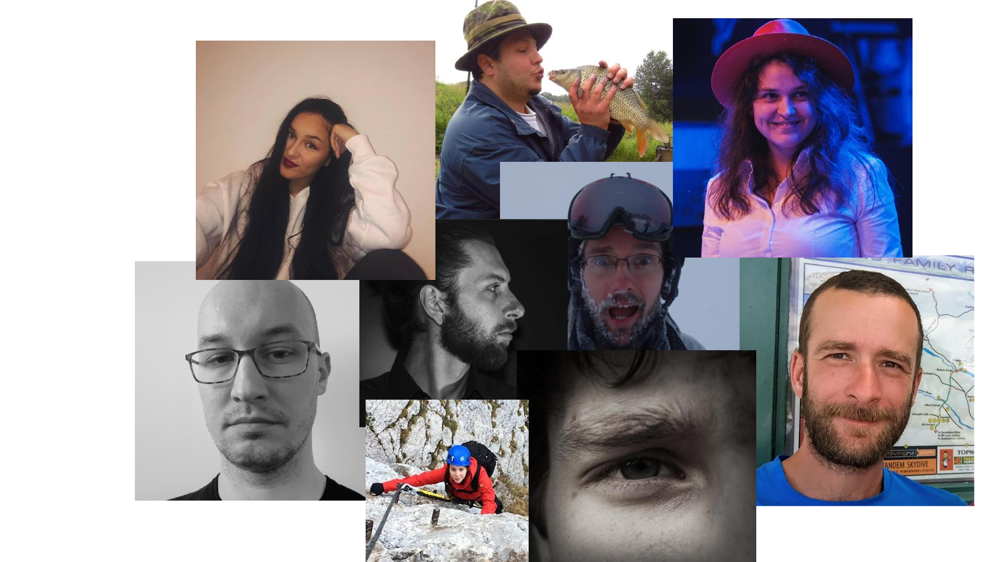
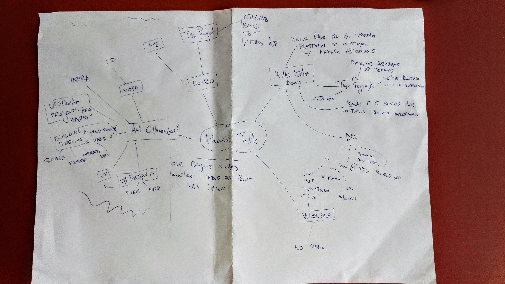
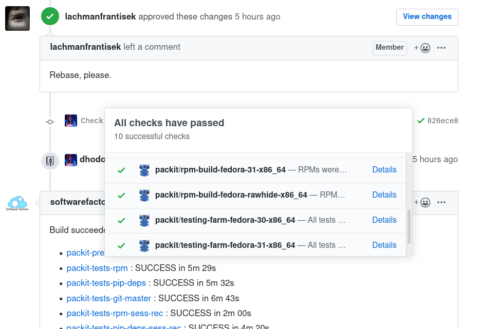

class: center, middle # Integrating upstream projects downstream ## Tomas Tomecek ??? * We have a logo now! * stickers and how to get them * My team wanted me to have this presentation --- class: center, middle # The packit team  --- # `/who Tomáš Tomeček` .left-column[ * Principal Software Engineer @ Red Hat * Tea lead * Containers, automation and integration * I ❤ free & open source software ] .right-column[ <img src="./tomas.jpg" width="320"> ] ??? * I'm a tea lead! --- class: center, middle # Agenda for today  ??? * Intro to the project * What we've achieved so far? * Any challenges? * Future plans --- class: center, middle # Packit ## A GitHub app which helps you integrate your upstream project into Fedora OS and CentOS Stream. --- class: center, middle # Packit (cont'd)  --- # What we've achieved so far? * You can enjoy a platform to integrate with Fedora and CentOS Stream. * Packit can replace Travis CI, but... * Every pull is built as an RPM and can be tested in a VM. * Packit will help you with dependency problems. * You are getting feedback while working on the code. ??? * dep problems - no multi repo deps --- # How's the project doing? (numbers) * Do you want to play a game? -- * 8 git repositories -- * 7 openshift pods -- * 3417 lines of `{yaml,yml}` -- * 9 people -- * 101 projects on-board!!! -- * ~10000 of build and test runs --- # How's the project doing? (cont'd) * We release early and deploy often. * We've automated our deployment process like mad. * And we have CI/CD! * We have outages. * We're helping people to get on-board of packit train. --- # How do we develop packit? -- * Like mad. -- * Code review & pre-commit. * Scrum-ish development process. * Staging environment = continuous deployment & monitoring. * Different sets of tests. * Requre: Simplify your Integration&E2E tests (Sunday, 3pm) ??? * unit, integration, functional, e2e, requre, x-repo --- # Any challenges? -- .center[] --- # Any challenges? <span class="center"></span> --- # Any challenges? (cont'd) * Infrastructure is on cluster-fire. * Too many requests. * Upstream projects use a different development process. --- # Any challenges? (cont'dd) * RPM spec files are hard. * Running a 24/7 service is not easy. * Security, operation, development, verification, scalability * "No route to host" * User experience ??? * Parsing RPM spec files... * Lars wants the lieast amount of feedback, Yarda looks for verbosity. --- class: center, middle # Integrating upstream code downstream is so much fun! --- # What's the future? * ∅ CO₂ -- * You tell us! * Better user experience. * Complete the Fedora RPM release automation. --- class: center, middle # Workshop! ## 3:30pm ## Workshop Room C - C228 --- class: center, middle # What the wig? --- # Q&A + Thank you for coming! .left-column[ * <span class="fa fa-github-square"></span> [github.com/TomasTomecek/speaks](https://github.com/TomasTomecek/speaks) * <span class="fa fa-github-square"></span> [github.com/packit-service](https://github.com/packit-service) * <span class="fa fa-twitter-square"></span> [@TomasTomec](https://twitter.com/TomasTomec) * <span class="fa fa-globe"></span> [packit.dev/](https://packit.dev/) * <span class="fa fa-globe"></span> [Packit-as-a-Service](https://github.com/marketplace/packit-as-a-service) ] .right-column[ ]